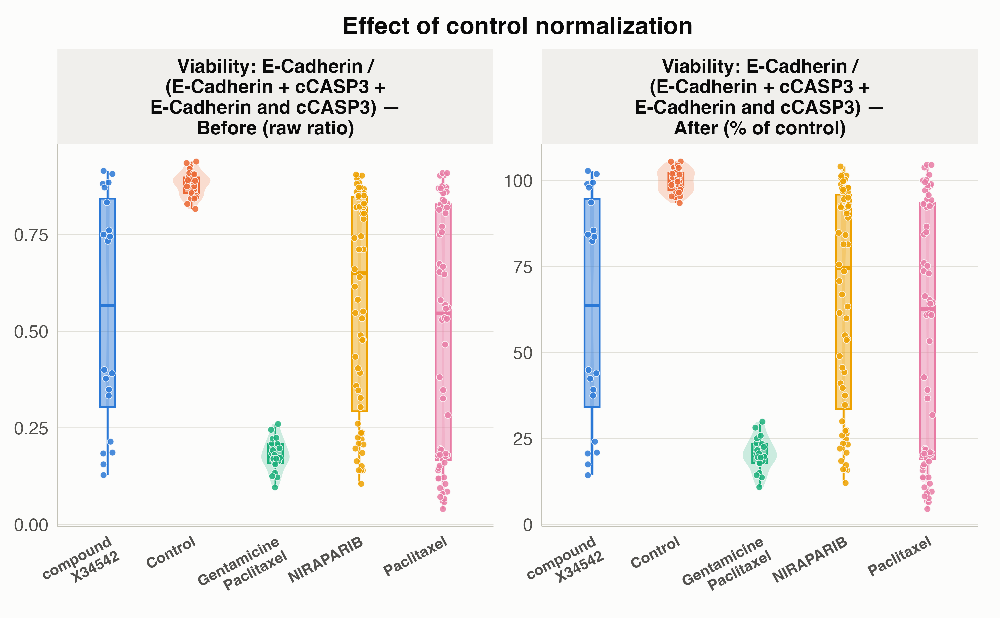
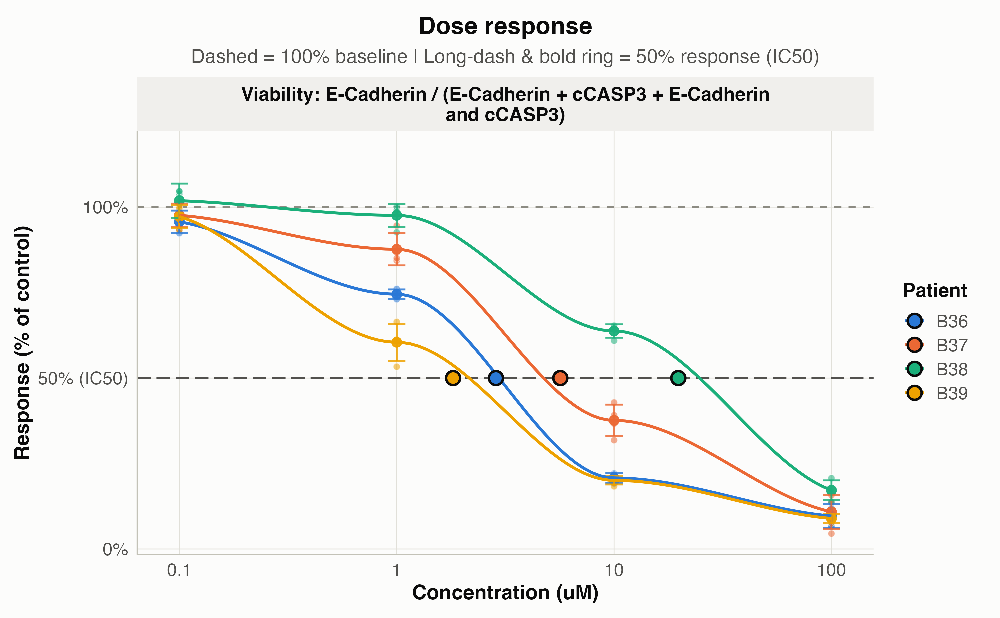
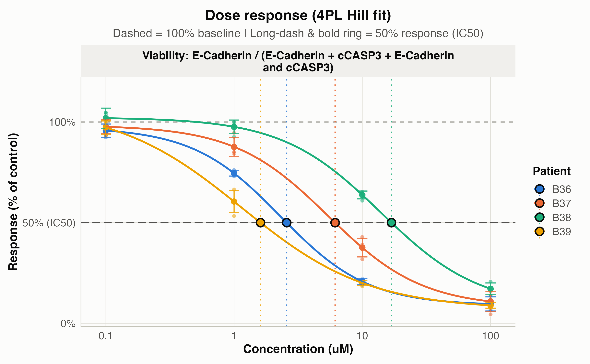
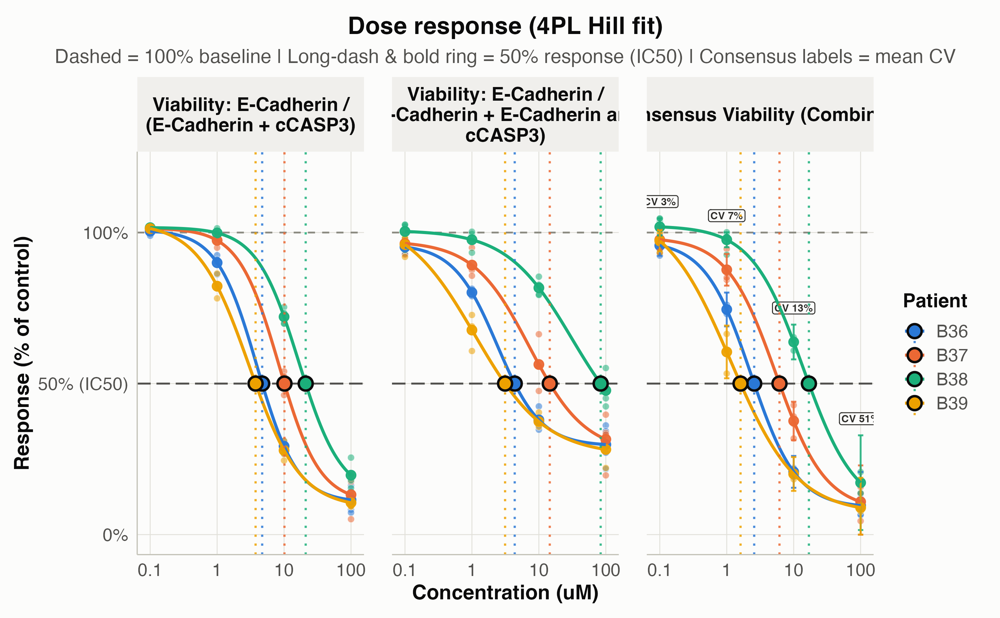
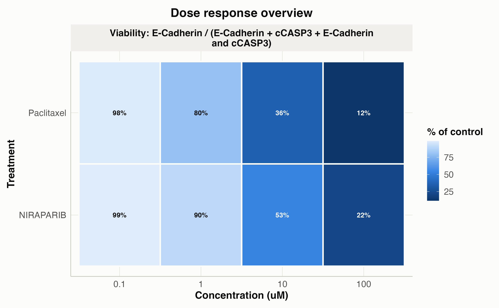
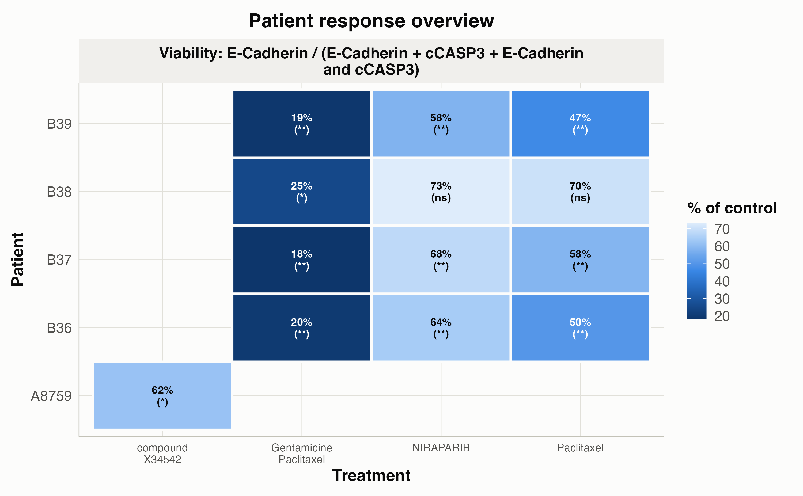
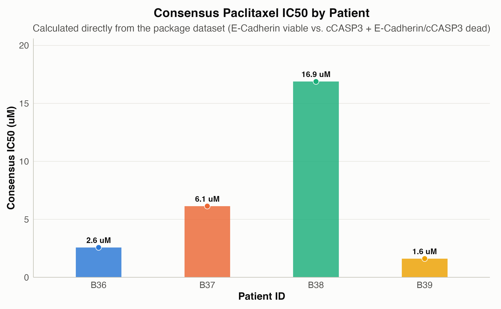

Cohort Normalization, Dose-Response Curves, and Statistical Comparisons
Source:vignettes/cohort-and-dose-response.Rmd
cohort-and-dose-response.RmdOverview
In 3D patient-derived cancer models stained for nuclear, tumor, and apoptotic markers (Labrosse et al., 2024, doi:10.1016/j.xpro.2024.103274), each image contains:
-
Viable target/cancer cells (e.g.,
E-Cadherinpositive), which decrease as drug concentration increases. -
Dying/apoptotic cells (e.g.,
cCASP3positive and double-positiveE-Cadherin and cCASP3), which increase as drug concentration increases. -
Other non-target cells (e.g.,
onlyDAPIPositvestromal/immune cells), which are excluded from the cancer-specific denominator.
To quantify on-target drug sensitivity and estimate IC50,
drugsens lets you specify your own dead/dying cell
marker(s) (dead_markers) and viable/total
target cell marker(s) (viable_markers or
total_markers), along with your control
condition (control_treatment_name):
Target Cell Viability = 1 - (Dead Cells / Total Target Cells) = Viable Target Cells / (Viable Target Cells + Dead Cells)
normalize_to_control() then expresses each well’s target
cell viability as a percentage of the matched patient
Control mean (pct_of_control, where
Control = 100%), enabling:
- Side-by-side inspection before and after control normalization
(
plot_normalization_before_after()). - Dose-response curve fitting via LOESS or 4-parameter log-logistic
(
4pl) Hill models with single-marker or multi-marker consensus IC50 estimation (plot_dose_response()). - Multi-drug and multi-patient cohort summaries
(
plot_dose_response_heatmap(),plot_treatment_summary(),plot_patient_heatmap()).
1. Loading the Package Dataset (extdata/to_merge)
We load the single-cell QuPath exports shipped with
drugsens in extdata/to_merge/, compute
per-image marker counts and ratios
(make_count_dataframe()), and pivot to long format
(change_data_format_to_longer()):
library(drugsens)
library(ggplot2)
example_dir <- system.file("extdata/to_merge/", package = "drugsens")
bind_data <- data_binding(
path_to_the_projects_folder = example_dir,
files_extension_to_look_for = "csv"
)
counts_df <- make_count_dataframe(bind_data)
long_df <- change_data_format_to_longer(counts_df)
# Inspect patients, treatments, and marker populations in the dataset
unique(long_df[, c("PID", "Tissue", "Treatment")])
#> # A tibble: 19 × 3
#> PID Tissue Treatment
#> <chr> <chr> <chr>
#> 1 A8759 p.wash compoundX34542
#> 2 A8759 Spleen Control
#> 3 A8759 Spleen compoundX34542
#> 4 B36 Ascites Control
#> 5 B36 Ascites Paclitaxel
#> 6 B36 Ascites NIRAPARIB
#> 7 B36 Ascites GentamicinePaclitaxel
#> 8 B37 Ascites Control
#> 9 B37 Ascites Paclitaxel
#> 10 B37 Ascites NIRAPARIB
#> 11 B37 Ascites GentamicinePaclitaxel
#> 12 B38 Eye GentamicinePaclitaxel
#> 13 B38 Eye Control
#> 14 B38 Eye Paclitaxel
#> 15 B38 Eye NIRAPARIB
#> 16 B39 Ascites Control
#> 17 B39 Ascites Paclitaxel
#> 18 B39 Ascites NIRAPARIB
#> 19 B39 Ascites GentamicinePaclitaxel
unique(long_df$marker_positivity)
#> [1] "onlyDAPIPositve_ratio_of_total_cells"
#> [2] "E-Cadherin_ratio_of_total_cells"
#> [3] "cCASP3_ratio_of_total_cells"
#> [4] "E-Cadherin and cCASP3_ratio_of_total_cells"2. Selecting Dead and Target Cells & Normalizing to Control
(normalize_to_control())
In normalize_to_control(), you can specify:
-
dead_markers: marker(s) representing dying/dead cells (e.g.,"cCASP3"orc("cCASP3", "E-Cadherin and cCASP3")), -
viable_markers(ortotal_markers): marker(s) representing viable cancer cells (here"E-Cadherin", excludingonlyDAPIPositve), -
control_treatment_name: your vehicle/untreated control label (here"Control").
Here we compute combined target cell viability across the cohort
(consensus_only = TRUE produces a single combined viability
metric per well when multiple dead markers are supplied):
norm_df <- normalize_to_control(
long_df,
dead_markers = c("cCASP3", "E-Cadherin and cCASP3"),
viable_markers = "E-Cadherin",
control_treatment_name = "Control",
treatment_column_name = "Treatment",
group_by_columns = "PID",
consensus_only = TRUE
)
head(norm_df[, c("PID", "Treatment", "Concentration1", "dead_fraction", "viable_fraction", "pct_of_control")])
#> # A tibble: 6 × 6
#> PID Treatment Concentration1 dead_fraction viable_fraction pct_of_control
#> <chr> <chr> <chr> <dbl> <dbl> <dbl>
#> 1 A8759 compoundX34… 10 0.0931 0.907 102.
#> 2 A8759 compoundX34… 10 0.119 0.881 99.1
#> 3 A8759 compoundX34… 10 0.128 0.872 98.0
#> 4 A8759 compoundX34… 10 0.115 0.885 99.5
#> 5 A8759 compoundX34… 10 0.0852 0.915 103.
#> 6 A8759 compoundX34… 10000 0.872 0.128 14.4
plot_normalization_before_after(norm_df)
Notice how inter-patient differences in baseline viability
(Before, left panel) are aligned to 100%
in the Control group (After, right
panel).
3. Dose-Response Curves: LOESS, 4PL Hill Models & Consensus IC50
(plot_dose_response())
You can pass norm_df (or pass long_df
directly with dead_markers, viable_markers,
and selected_treatments) to
plot_dose_response().
Non-Parametric LOESS Curve (method = "loess")
plot_dose_response(
norm_df,
selected_treatments = "Paclitaxel",
method = "loess"
)
4-Parameter Log-Logistic Hill Curve & IC50
(method = "4pl")
Setting method = "4pl" fits a 4-parameter log-logistic
Hill equation per patient using stats::optim(), overlays
the fitted sigmoidal curves, marks each patient’s estimated IC50
(show_ic50 = TRUE), and stores the parameter table in
attr(plot, "ic50"):
p_4pl <- plot_dose_response(
norm_df,
selected_treatments = "Paclitaxel",
method = "4pl",
show_ic50 = TRUE
)
p_4pl
# Inspect estimated IC50 and Hill parameters per patient
attr(p_4pl, "ic50")
#> bottom top ic50 ec50 y_ic50 hill_slope converged
#> 1 8.908520 97.34016 2.572026 2.300467 50 1.2686472 TRUE
#> 2 8.098495 98.39673 6.137040 5.433755 50 1.1840277 TRUE
#> 3 7.931003 102.24226 16.881294 13.924208 50 1.1246431 TRUE
#> 4 6.982642 107.74076 1.608725 1.151282 50 0.8798262 TRUE
#> ic50_reached PID
#> 1 TRUE B36
#> 2 TRUE B37
#> 3 TRUE B38
#> 4 TRUE B39
#> marker_positivity
#> 1 Viability: E-Cadherin / (E-Cadherin + cCASP3 + E-Cadherin and cCASP3)
#> 2 Viability: E-Cadherin / (E-Cadherin + cCASP3 + E-Cadherin and cCASP3)
#> 3 Viability: E-Cadherin / (E-Cadherin + cCASP3 + E-Cadherin and cCASP3)
#> 4 Viability: E-Cadherin / (E-Cadherin + cCASP3 + E-Cadherin and cCASP3)
#> is_consensus
#> 1 TRUE
#> 2 TRUE
#> 3 TRUE
#> 4 TRUEMulti-Marker Selection, Consensus IC50 & Per-Point Coefficient
of Variation (consensus_dispersion)
In our dataset, QuPath exports two apoptotic/dead cell populations
("cCASP3" late apoptosis and double-positive
"E-Cadherin and cCASP3" early/mid apoptosis) alongside
viable cancer cells ("E-Cadherin"). When you supply
multiple markers to plot_dose_response() with
consensus_only = FALSE (the default), drugsens
automatically generates:
-
Individual panels for each marker pair
(
E-Cadherin / (E-Cadherin + cCASP3)andE-Cadherin / (E-Cadherin + E-Cadherin and cCASP3)), - A
Consensus Viability (Combined)panel that combines the markers, marks the bold 50% response point (IC50) on every curve, and overlays per-point dispersion (consensus_dispersion = "cv"for standard Coefficient of Variation, or"rcvq","rcv_mad","sd","se","iqr","mad"):
p_multi <- plot_dose_response(
long_df,
viable_markers = "E-Cadherin",
dead_markers = c("cCASP3", "E-Cadherin and cCASP3"),
control_treatment_name = "Control",
selected_treatments = "Paclitaxel",
method = "4pl",
show_ic50 = TRUE,
consensus_dispersion = "cv",
show_cv = TRUE
)
p_multi
# Consensus IC50 from the combined markers:
attr(p_multi, "consensus_ic50")[, c("PID", "ic50", "hill_slope", "bottom", "top")]
#> PID ic50 hill_slope bottom top
#> 3 B36 2.572026 1.2686472 8.908520 97.34016
#> 6 B37 6.137040 1.1840277 8.098495 98.39673
#> 9 B38 16.881294 1.1246431 7.931003 102.24226
#> 12 B39 1.608725 0.8798262 6.982642 107.74076
# Per-point CV and dispersion metrics on the Consensus curve:
head(attr(p_multi, "consensus_cv")[, c("PID", "Concentration1", "mean_pct_of_control", "sd", "cv", "rcvq", "rcv_mad")])
#> PID Concentration1 mean_pct_of_control sd cv rcvq
#> 1 B36 0.1 95.715060 3.406344 3.482272 3.528984
#> 2 B36 1.0 74.533927 5.594794 6.575558 9.235112
#> 3 B36 10.0 20.776844 5.272032 15.680938 16.028484
#> 4 B36 100.0 9.641045 11.097608 53.713315 63.869784
#> 5 B37 0.1 97.607021 3.294000 3.333123 3.408780
#> 6 B37 1.0 87.671931 5.250795 5.627409 7.001187
#> rcv_mad
#> 1 2.842508
#> 2 7.544353
#> 3 15.328480
#> 4 73.697467
#> 5 2.391068
#> 6 6.0676834. Drug Panel & Cohort Overview Plots
Treatment x Concentration Heatmap
(plot_dose_response_heatmap())
Summarize the drug screen across doses (Paclitaxel and
NIRAPARIB), with show_values = TRUE to print
mean % of control inside each tile (deepest blue highlights
the strongest drug effect / lowest remaining viability):
norm_panel <- norm_df[norm_df$Treatment %in% c("Control", "Paclitaxel", "NIRAPARIB"), ]
plot_dose_response_heatmap(norm_panel, show_values = TRUE)
Ranked Treatment Summary with Statistical Comparisons
(plot_treatment_summary())
Rank all treatments in the dataset by overall effect size and test
each treatment against Control using Wilcoxon rank-sum
(stat_method = "wilcox") or t-tests
(stat_method = "t.test"), with multiple-testing correction
(p_adjust_method = "BH", "bonferroni",
"holm", "none", etc.) and full test results
stored in attr(plot, "stats"):
Statistical Note: When multiple concentrations or imaged fields of view are present for a drug,
plot_treatment_summary()andplot_patient_heatmap()pool observations across doses for an overall condition comparison againstControl. To test specific concentrations individually without pooling across doses, subsetnorm_dfto a single concentration or useget_QC_plots(..., x_plot_var = "Treatment_complete", compare_to_control = TRUE).
p_sum <- plot_treatment_summary(
norm_df,
compare_to_control = TRUE,
stat_method = "wilcox",
p_adjust_method = "BH",
pvalue_label = "p.adj.signif"
)
p_sum
# Inspect raw p_value and BH-adjusted p_adj per treatment
attr(p_sum, "stats")[, c("group", "p_value", "p_adj", "p_adjust_method", "label")]
#> group p_value p_adj p_adjust_method label
#> 1 compoundX34542 1.690244e-05 1.690244e-05 BH ***
#> 2 Paclitaxel 2.072099e-09 5.181105e-09 BH ***
#> 3 NIRAPARIB 2.956067e-09 5.181105e-09 BH ***
#> 4 GentamicinePaclitaxel 3.885829e-09 5.181105e-09 BH ***Patient x Treatment Cohort Heatmap
(plot_patient_heatmap())
Compare patient-specific drug sensitivity profiles across the cohort
(B36, B37, B38, B39,
and A8759), with compare_to_control = TRUE and
p_adjust_method = "BH" to annotate each tile with its
BH-adjusted significance against Control:
plot_patient_heatmap(
norm_df,
show_values = TRUE,
compare_to_control = TRUE,
stat_method = "wilcox",
p_adjust_method = "BH",
pvalue_label = "p.adj.signif"
)
5. Customizing Plots with drugsens_theme() and
drugsens_palette
Both drugsens_theme() and the colorblind-safe
drugsens_palette are exported so you can build custom
visualizations (such as comparing each patient’s consensus IC50) that
match the rest of your drugsens report:
ic50_df <- attr(p_multi, "consensus_ic50")
ggplot(ic50_df, aes(x = PID, y = ic50, fill = PID, color = PID)) +
geom_col(width = 0.42, alpha = 0.82, color = NA) +
geom_point(size = 3.4, shape = 21, color = "#fcfcfb", stroke = 0.6) +
geom_text(
aes(label = sprintf("%.1f uM", ic50)),
vjust = -0.8,
fontface = "bold",
size = 4.0,
color = "#0b0b0b"
) +
scale_fill_manual(values = unname(drugsens_palette)) +
scale_color_manual(values = unname(drugsens_palette)) +
scale_y_continuous(expand = expansion(mult = c(0, 0.22))) +
labs(
title = "Consensus Paclitaxel IC50 by Patient",
subtitle = "Calculated directly from the package dataset (E-Cadherin viable vs. cCASP3 + E-Cadherin/cCASP3 dead)",
x = "Patient ID",
y = "Consensus IC50 (uM)"
) +
drugsens_theme() +
theme(
panel.grid.major.x = element_blank(),
legend.position = "none"
)